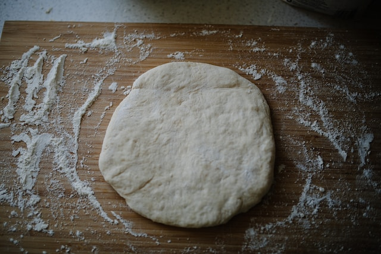

Pizzateig

Bildquelle: unsplash, philhearing
Neapolitanischer Pizzateig
Das perfekte Rezept für den Pizzaofen
Zutaten
Rezept für 3 Pizza je 270 g
- 500 g Mehl Tipo 00, mindestens 12% Eiweiß
- 300 g Wasser eiskalt, wiegen statt messen
- 0,5 g Hefe Ja, das reicht. Das ist etwa ein Kügelchen mit 8 mm Durchmesser
- 15 g Meersalz
Schritte
- Die Hefe und das Salz im Wasser auflösen und in das Mehl geben. Mit der Küchenmaschine langsam kneten. Nach ein paar Minuten die Maschine höher stellen und den Teig weitere 10 - 15 Minuten durchkneten lassen.
- Die Schüssel mit dem Teig luftdicht abschließen. Wenn kein passender Deckel vorhanden ist, einfach ein feuchtes Küchentuch verwenden und zusätzlich einen Teller nutzen. Der Teig sollte nun zwölf Stunden bei konstanter Raumtemperatur gehen. Um Luftbewegungen aus dem Weg zu gehen nutze ich den ausgeschalteten Backofen.
- Nach zwölf bis vierzehn Stunden ist der Teig ein wenig aufgegangen. Bitte nicht wundern, wenn er nicht total explodiert ist, das liegt an der geringen Menge Hefe. Um die Luft nicht wieder aus ihm zu drücken wird der Teig nicht noch einmal geknetet. Vorsichtig aus der Schüssel nehmen und mit einem großen Messer in drei gleich große Teile schneiden. Diese Teile mit den Händen rund formen und dann in eine flache Schale / Tupperbox o.ä. geben. Luftdicht verschließen und erneut acht bis zehn Stunden ruhen lassen.
- Nach der zweiten Ruhephase ist der Teig bereit ausgebreitet und belegt zu werden. Einen Teigling mit einem festen Spachtel aus der Box nehmen und in einen Haufen Mehl oder Hartweizengrieß geben. Auf einer bemehlten Arbeitsfläche den Teigling von innen nach außen formen. Dabei den Rand nicht platt drücken. Wie im Video gezeigt aus dem Teig mit den Handrücken eine runde Pizza formen. Den fertig geformten Pizzateig direkt auf eine mit Hartweizengrieß bestäubte Pizzaschaufel geben. Dann erst belegen.
Quelle des Rezepts: firechefs.de